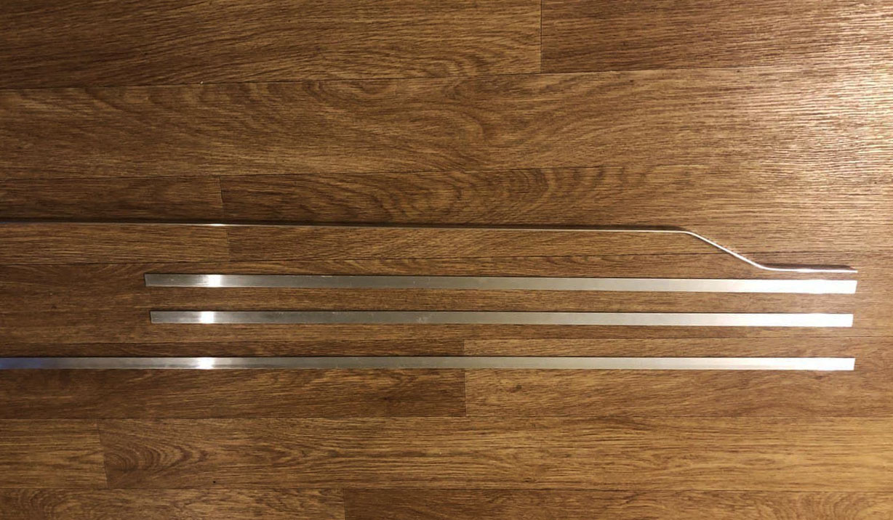
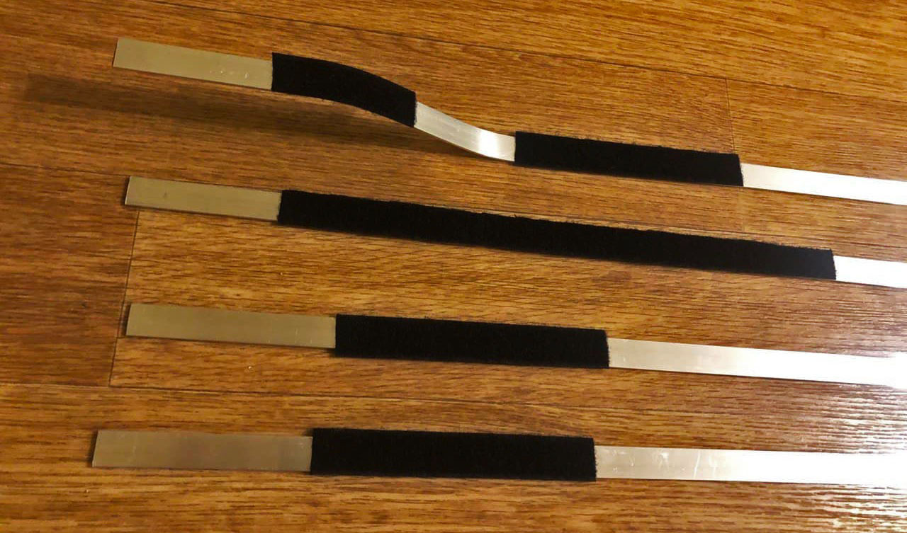
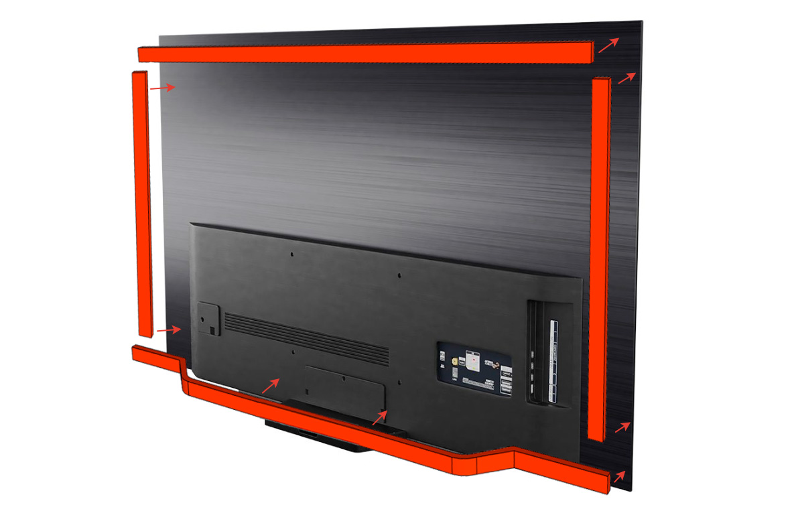
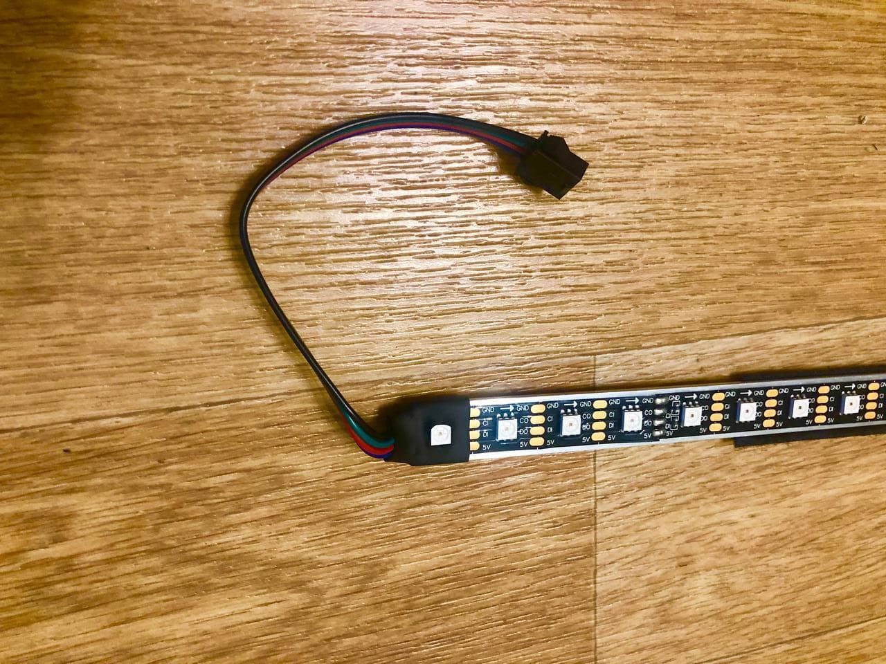
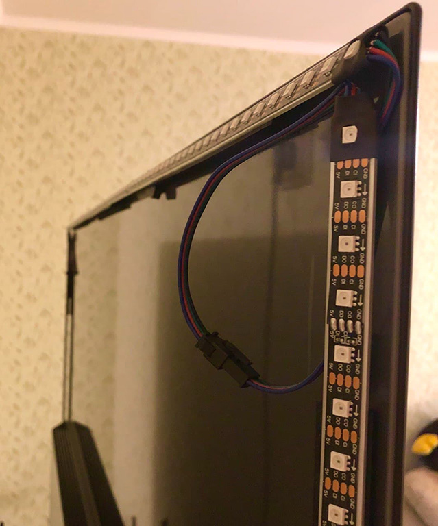

Светодиодную ленту возможно установить на корпус вашего ТВ различными способами, самый простой это нарезать ленту нужной длинны и приклеить ее с помощью стандартного двухстороннего скотча который поставляется непосредственно с лентой. Но как показывает практика не всегда этот скотч хорошего качества и со временем он начинает отклеиваться. Также есть еще один немаловажный момент - рассеивание тепла от самих диодов на ленте в процессе ее работы. Чем меньше нагреваются светодиоды тем дольше проработает сама лента. Корпус ТВ сделан из пластмассы которая не способствует отводу тепла, для решения этой проблемы необходимо воспользоваться дополнительным промежуточным основанием. Для этих целей вполне подойдет обычная алюминиевая планка или специализированный профиль для ленты.
Алюминиевую планку нарезал на отрезки в соответствии с размерами ТВ. Для планки предназначенной для нижней части придал необходимый профиль, чтобы обеспечить прилегание на неровностях корпуса.

Для размещения алюминиевых планок на корпусе ТВ я приобрел текстильную ленту застёжку - Velcro. Отрезал несколько небольших отрезков и приклеил к алюминиевым планкам. На данный момент меня устраивает подобное решение, возможнно в будующем если планки будут провисать приклею их непосредственно на хороший двухсторонний скотч.

Схема размещения на корпусе ТВ.

Перед размещением самих планок предварительно наклеиваем светодиодную ленту, нарезаем в соответствии с размерами подготовленных ранее планок. В моем случае я сменил стандартный скотч посредственного качества на проверенный фирмы 3M. Не могу утверждать будет ли в вашем случае изначально на ленте хороший скотч от 3M или плохой, в любом случае можно его будет переклеить в будущем если лента будет отклеиваться с установленного места.

Алюминиевые планки со светодиодной лентой установлены. Рекомендую вам проверять работоспособность ленты до ее размещения на корпусе ТВ, все соединения контактов светодиодной ленты с проводом должны быть надежно пропаяны. В магазинах имеются специальные соединительные уголки для ленты, но я не рекомендую их использовать так как соединение в них довольно посредственное.
